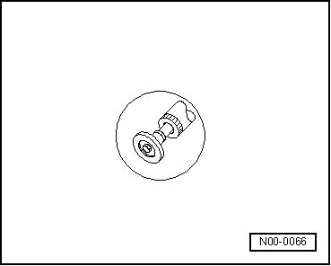
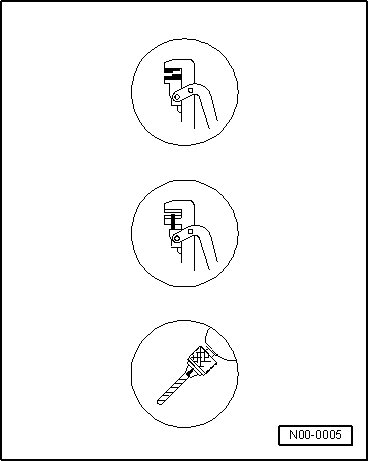
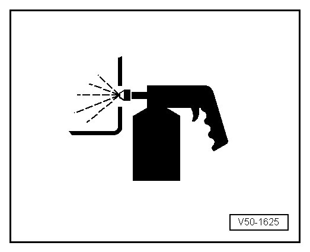
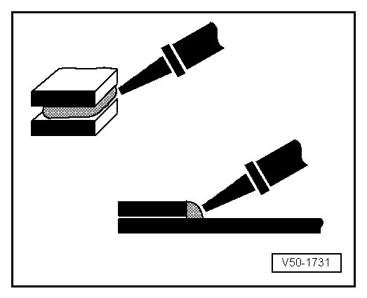

Symbols for Working Procedures
Symbols for Working Procedures

Grind
- In order to strip off material from a welding seam using a rod grinder.
• Welding seams should be ground so that the strength of the outer panels is reduced by a minimum or not at all.
•
•
Offset

- For overlap welding.
Punch
- For subsequent SG plug welding.
Drill
- For subsequent SG plug welding or spot welding (original joint).
Grind
• Use brush (VAS 5182) to remove paint in areas where access is difficult (e.g. inner roof frame).
Cavity conservation

Bond

Seal